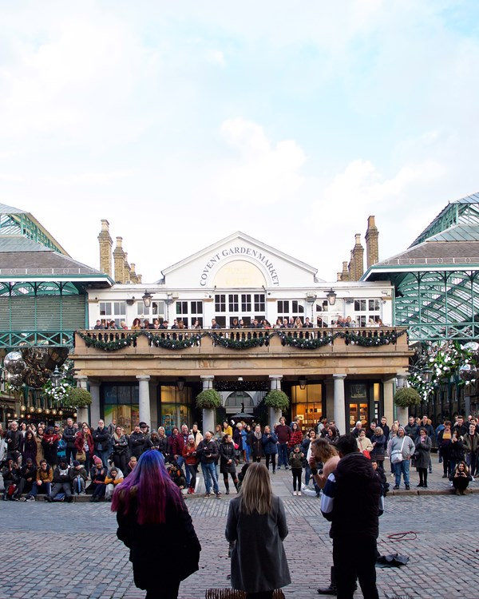

Other
Here are some cool places I've visited so far:
Abbey Road

I walked across the street-crossing shown in this photo and stood outside the studio where the Beatles recorded their Abbey Road album. Pink Floyd also recorded some albums at this studio, which is what interested me the most.
Battlesea Power Station

To continue my trend of visiting places featured on album covers, I went to Battlesea Power Station. This is what is shown on the front cover of Pink Floyd's album Animals. Now it is a mall, but I had fun walking around and checking out all the shops.
Covent Garden
I visited Covent Garden and perused the market. I also watched a street performer play guitar for a very large crowd of people. He played Bohemian Rhapsody by Queen, and we all loved singing along.
Here's all the other stuff specified in the Website Instructions:
log10(10) = 1
22 = 4